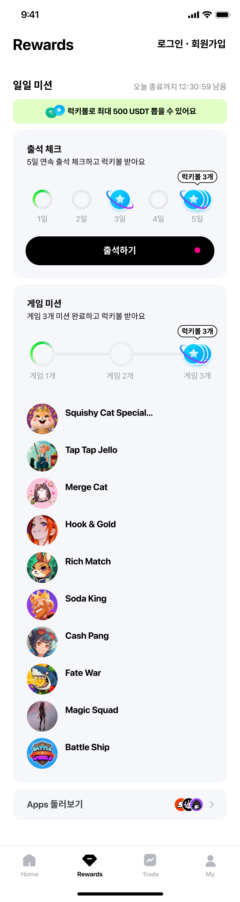
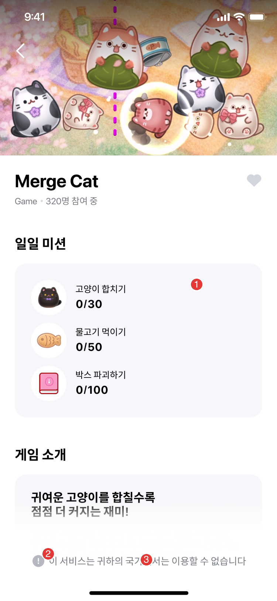
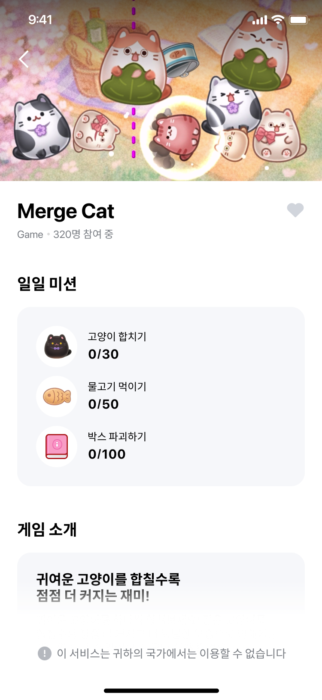
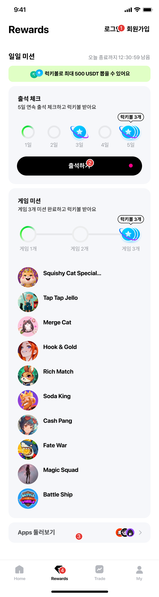
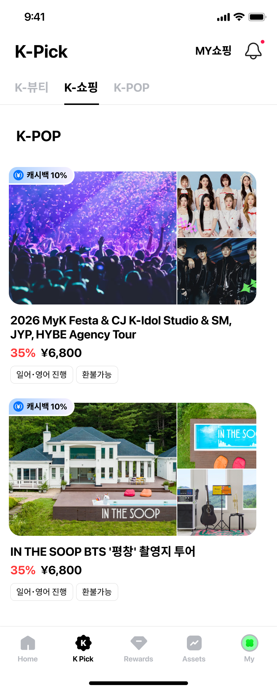

시작 전 준비물 3가지
아래 3가지만 준비해 AI에게 전달하면 됩니다. 토큰을 먼저 줘야 작업이 시작됩니다(토큰 우선 규칙).
Figma 프레임 주소
번역·문서화할 화면(프레임)의 Figma URL. 여러 개도 가능합니다.
위키 페이지 주소
결과를 반영할 Confluence 위키 페이지 URL (어느 섹션에 넣을지도 함께).
프로젝트 받기 · 업데이트 Git Clone / Pull
이 워크플로우(절차 가이드·자동화 스크립트·템플릿)는 Git 저장소로 관리됩니다. 아래에서 터미널 여는 법부터 단계별로 안내합니다. Mac 기준이며, Windows는 각 단계의 🪟 회색 안내를 참고하세요.
0) 터미널(명령어 창) 열기
⌘(Command) + Space 를 눌러 검색창을 열고 "터미널" 입력 → Enter. (또는 응용 프로그램 ▸ 유틸리티 ▸ 터미널) 검은 명령어 입력 창이 뜹니다.
🪟 Windows: 시작 메뉴에서 "PowerShell" 을 검색해 엽니다.
1) 프로젝트를 받을 폴더로 이동
받고 싶은 위치로 이동합니다. 예) 바탕화면. 아래 한 줄을 붙여넣고 Enter:
cd ~/Desktop
→ 다음 단계에서 클론하면 이 위치 안에 planning_system_with_figma 폴더가 새로 생깁니다.
🪟 Windows: cd %USERPROFILE%\Desktop
2) 저장소 클론 (복사 → 붙여넣기 → Enter)
아래 두 줄을 복사해 터미널에 붙여넣고(붙여넣기는 ⌘ + V) Enter를 누릅니다:
git clone https://github.com/hobong-ho6/planning_system_with_figma.git cd planning_system_with_figma
🪟 Windows: 붙여넣기는 Ctrl + V 또는 창 안에서 마우스 우클릭.
3) Python 의존성 설치
이어서 아래를 붙여넣고 Enter:
pip install -r scripts/requirements.txt
4) Claude Code에서 열어 사용
받은 planning_system_with_figma 폴더를 Claude Code로 열고, 이 가이드의 요청법대로 토큰·프레임·위키 주소를 전달하면 됩니다.
5) 최신 버전으로 업데이트 Git Pull · 이미 받은 경우
처음이 아니라 예전에 받아둔 프로젝트를 최신으로 갱신할 때는 클론(2번) 대신 이걸 씁니다. 규칙·가이드·스크립트가 업데이트되면 아래로 최신을 받으세요. 먼저 프로젝트 폴더 안으로 이동한 뒤 붙여넣고 Enter:
cd ~/Desktop/planning_system_with_figma git pull
→ git pull이 바뀐 파일만 받아 최신으로 맞춰줍니다. 스크립트가 바뀌었을 수 있으니 의존성도 한 번 더 갱신하면 안전합니다:
pip install -r scripts/requirements.txt
🪟 Windows: cd %USERPROFILE%\Desktop\planning_system_with_figma 이동 후 git pull.
⚠️ 내가 직접 고친 파일이 있어 "충돌(conflict)" 메시지가 뜨면, 그 파일을 다른 곳에 백업해 두고 다시 git pull 하세요. (가이드·규칙만 사용하는 경우 보통 문제 없습니다.)
📦 받는 것: md/(절차 가이드)·scripts/(자동화)·templates/·CLAUDE.md. 번역 결과·이미지 등 프로젝트별 산출물은 작업 시 자동 생성됩니다.
🔒 저장소가 비공개면 GitHub 접근 권한(초대)이 먼저 필요합니다.
➡️ 다음 단계: 사용자 설정 — 받은 뒤 PC마다 한 번 해두는 시스템 설정입니다.
사용자 설정 처음 한 번만 · PC마다
받은 프로젝트에 "나는 누구인가"를 한 번 알려주는 시스템 설정입니다. 여러 사람이 같은 저장소를 함께 쓰기 때문에, 이 값이 없으면 누가 무엇을 했는지 기록에 남지 않습니다. PC를 2대 이상 쓰면 모든 PC에서 같은 값으로 한 번씩 실행하세요.
🤖 먼저 알아두면 편한 것 — 이 설정을 스스로 찾아 하지 않아도 됩니다. 작업을 시작하면 AI가 상황을 먼저 확인하고 필요한 것만 물어봅니다. 답만 해주시면 나머지는 AI가 정리합니다.
AI가 먼저 확인하는 것 묻기 전에 스스로 판별합니다
| 이미 설정을 마친 PC | 아무것도 묻지 않습니다. 지난 작업을 한 줄로 브리핑하고 바로 시작합니다 |
|---|---|
| 같은 사람의 새 PC | 이 PC에서 프로젝트를 어디에 받았는지만 물어봅니다(경로 한 줄) |
| 설정만 빠진 경우 | 이 PC가 기록에 남아 있으면 “○○ 님이신가요?” 한 번만 확인하고, 맞으면 넣을 명령을 값까지 채워 알려줍니다 |
| 처음 합류하는 분 | 세 가지만 물어봅니다 — ① 나를 가리킬 짧은 영문 이름(파일명이 됩니다) ② 작업 기록에 남길 이름·메일 ③ 담당할 작업. 나머지(내 메모 파일 생성·담당 표시)는 AI가 만들고 정리합니다 |
🔎 어떻게 아는가 — 설정값, 이 컴퓨터 이름이 기존 기록에 있는지, 저장소의 지난 작업 이력을 봅니다. 이미 알 수 있는 것은 다시 묻지 않습니다.
아래는 직접 설정하고 싶을 때 참고하는 내용입니다. AI가 안내한 명령을 그대로 실행해도 결과는 같습니다.
1) 아래 세 줄을 본인 값으로 바꿔 붙여넣기
터미널을 열고(위 0) 터미널 열기 참고) 아래를 붙여넣고 Enter. --global 설정이라 어느 폴더에서 실행해도 됩니다.
git config --global user.name "홍길동" git config --global user.email "hong@example.com" git config --global handoff.person hong
- user.name · user.email — 작업 기록에 남는 이름·메일입니다. GitHub 계정과 같은 메일을 쓰면 내 작업으로 집계됩니다.
- handoff.person — 이 시스템이 쓰는 사람키입니다. 짧은 영문 소문자로 정하세요(예:
hong). 파일 이름으로 쓰이므로 공백·한글·대문자는 넣지 않습니다.
🪟 Windows: PowerShell에 같은 세 줄을 그대로 붙여넣으면 됩니다(git 명령이라 동일).
2) 제대로 들어갔는지 확인
git config --get handoff.person
→ 방금 정한 사람키(예: hong)가 출력되면 끝입니다. 아무것도 나오지 않으면 1)을 다시 실행하세요.
3) 이 설정이 있으면 달라지는 것
| 내 작업 이력 | 기록에 내 이름·메일로 남습니다. 설정하지 않으면 계정명@컴퓨터이름 형태로 남아 누구인지 특정할 수 없습니다. |
|---|---|
| 내 환경 메모 | AI가 작업을 시작할 때 내 PC 메모(경로·자주 겪는 오류·복구 명령)를 자동으로 함께 읽습니다. 다른 사람 메모는 읽지 않습니다. |
| 담당 표시 | 작업 목록에 담당자가 표시돼, 같은 대상을 두 사람이 모르고 동시에 건드리는 일을 막습니다. |
⚠️ 컴퓨터 이름으로는 사람을 구분할 수 없습니다. 한 사람이 PC를 2대 이상 쓰고, 한 PC를 여러 사람이 쓸 수도 있기 때문입니다. 그래서 사람키를 PC마다 같은 값으로 넣는 것이 중요합니다.
🔒 이 설정은 내 컴퓨터에만 저장되고 저장소에는 올라가지 않습니다. 비밀값이 아니며 토큰과는 무관합니다.
토큰 발급 방법 처음 한 번만
토큰은 "AI가 내 계정으로 Figma·위키를 읽도록 허용하는 열쇠"입니다. 아래 순서로 발급해 AI에게 전달하세요. 토큰은 비밀번호처럼 취급하고 외부에 공유하지 마세요. (메뉴 명칭은 버전에 따라 조금 다를 수 있어요.)
Figma 토큰
- figma.com 로그인 후 우측 상단 계정 아이콘 → Settings(설정)
- Security(보안) 탭으로 이동
- Personal access tokens → Generate new token
- 토큰 이름·만료기간 지정 후 생성 → 표시된 토큰을 즉시 복사 (이후 다시 보이지 않음)
🔎 형태 예시: figd_xxxxxxxx…
위키(Confluence) 토큰
- 위키(wiki.workers-hub.com) 로그인 후 우측 상단 프로필 사진 클릭
- Settings(설정) → Personal Access Tokens 메뉴
- Create token → 이름·만료일 지정 → Create
- 생성된 토큰을 즉시 복사해 보관
🔒 토큰이 만료되면 같은 방법으로 재발급하면 됩니다.
⚠️ 토큰을 메신저·문서에 그대로 남기지 마세요. 작업할 때만 AI에게 전달하고, 유출이 의심되면 위 화면에서 해당 토큰을 삭제(Revoke)한 뒤 새로 발급하세요.
전체 흐름 한눈에 보기
요청 한 번이면 아래 순서로 진행됩니다. 표시는 AI가 당신에게 확인을 요청하는 지점입니다.
- 1
토큰·주소 전달
Figma·위키 토큰과 대상 주소를 전달합니다.
실제 요청 예시
[Figma 토큰] [위키 토큰] 위키: …/Unifi+mini+-+Guide+Kim (LV.1 섹션) 프레임: …/node-id=56456-27221 외 3개 "XLT 코멘트 문구만 번역해서 위키 업데이트해줘"
- 2
화면·코멘트 읽기
AI가 Figma에서 텍스트·디자이너 코멘트(정책)를 최신으로 가져옵니다.
예시: 읽어들인 화면

Reward 프레임의 텍스트·코멘트를 Figma에서 최신으로 읽어옵니다.
- 3
번역 대상 선별 🙋 확인
"XLT" 코멘트가 달린 문구만 번역합니다. 애매하면 매칭 결과를 먼저 확인받습니다.
예시: XLT 코멘트 → 번호 선별

번호 ③ "이 서비스는 귀하의 국가에서는 이용할 수 없습니다" 가 XLT 대상 → 이 문구만 번역.
- 4
5개 언어 번역
한국어 원문을 다듬고 영·일·중(번체)·태로 번역합니다(용어집 적용).
예시: 5개 언어 번역 결과
ko 이 서비스는 귀하의 국가에서는 이용할 수 없습니다 en This service is not available in your country ja このサービスはお客様の国ではご利用いただけません zh 此服務無法在您的國家使用 th บริการนี้ไม่สามารถใช้งานได้ในประเทศของคุณ - 5
⛔ 품질 검증 게이트
자동 검사 + 사람이 직접 점검. 치명적 오류(P0)가 0이어야 다음 단계로 진행합니다.
예시: 검증 리포트
- P0 0건 — 빈칸·오타·언어 혼입 없음 → 통과 ✅
- P1 (오탐) — "확인→check" 등 대소문자·정상 의역 오탐 → 수정 불요
- P2 (정책) — 마침표 스타일 → 정책상 유지
- 6
위키·엑셀 반영
화면 행, 번역표, XLT 엑셀, 변경 이력까지 위키에 반영합니다.
예시: 위키 반영 결과 (XLT 칸)
실제 위키에서 보기 ↗No XLT Key KR 3 mini_guidekim_service_unavailable_country 이 서비스는… - 7
용어집 보완 🙋 확인
새 용어가 필요하면 전체 JSON을 만들어 드리고, 당신이 Landpress에 반영합니다.
예시: 용어집 추가 (JSON)
"포이카츠": { "ko_KR":"포이카츠", "ja_JP":"ポイ活", "en_US":"point activity", "zh_TW":"點數活動", "th_TH":"การสะสมแต้ม" }이 JSON을 Landpress에 붙여넣어 v2.3로 반영했습니다.
동작 원리 이 시스템이 실제로 무엇을 하는가
요청 한 줄 뒤에서 무슨 일이 벌어지는지 알아두면, 무엇을 맡길 수 있고 무엇은 당신이 결정해야 하는지가 분명해집니다. 개발 지식은 필요하지 않습니다.
① 세 가지 원본에서 읽고, 한 곳에 씁니다
| Figma | 화면의 텍스트와 코멘트를 읽습니다. 코멘트가 곧 화면 정책이고, 본문이 xlt인 코멘트는 "이 문구를 번역 대상으로 잡아라"는 표시입니다 |
|---|---|
| 용어집(Landpress) | 5개 언어 표준 표기의 기준입니다. 읽기만 가능해서, 새 용어를 넣을 때는 AI가 전체 JSON을 만들어 드리고 당신이 CMS에 붙여넣습니다 |
| Jira | 티켓 제목·상태·설명 속 관련 링크를 읽어 위키 문서의 참조 정보를 채웁니다 |
| 위키(Confluence) | 유일한 쓰기 대상입니다. 화면 표·정책·번역표·이미지·엑셀이 모두 여기 모입니다 |
⚠️ 원본은 매번 새로 읽습니다. 이전에 읽어둔 걸 재사용하지 않기 때문에, 당신이 Figma 코멘트나 위키를 방금 고쳤어도 그 상태로 작업합니다.
② 번역은 "게이트"를 통과해야 밖으로 나갑니다
번역 결과는 검사를 통과하기 전까지 위키·엑셀로 나가지 않습니다. 순서는 이렇습니다.
| 1. 한국어 먼저 교정 | 원문의 오타·띄어쓰기·보이지 않는 공백을 먼저 정리합니다. 번역은 교정된 한국어를 기준으로 합니다(Figma 원본은 디자이너가 고쳐야 하므로 별도 목록으로 알려드립니다) |
|---|---|
| 2. 자동 검사 | 빈칸·언어 혼입·변수 불일치·용어집 위반을 기계가 찾습니다. 여기서 통과하는 건 시작점일 뿐입니다 |
| 3. 사람 눈 검토 | 기계가 못 잡는 것 — 어색한 표현, 붙어버린 띄어쓰기, 애매한 단어 — 을 전체 행에서 한 줄씩 봅니다. 바뀐 것만 보지 않습니다 |
| 4. 리포트 제출 | 무엇을 어떻게 판정했는지 근거를 남깁니다. 리포트에 필수 항목이 빠지면 자동 검사기가 "미완료"로 막습니다 |
🔴 P0(치명)이 0건이어야 다음 단계로 갑니다. P1·P2는 건마다 "실제 문제 / 오탐 / 정책상 유지"를 판정해 보고합니다.
③ 이미지 번호 ⓝ가 세 곳에서 같은 뜻입니다
화면 이미지의 번호 원, 정책 목록의 번호, 번역표의 No가 모두 같은 번호 체계입니다. 그래서 "3번 문구"라고 하면 이미지·정책·번역표에서 같은 곳을 가리킵니다.
| 번호 순서 | 화면 위에서 아래로 매깁니다. 코멘트가 화면 안쪽 요소에 달려 있어도 실제 보이는 위치를 기준으로 계산합니다 |
|---|---|
| 색 구분 | 빨강 = 정책 · 파랑 = 번역 대상 문구 |
| 배치 | 번호가 글자를 가리지 않게 문구 왼쪽에 두고, 서로 겹치지 않게 자동 조정합니다 |
④ 당신이 결정하는 지점 (AI가 임의로 넘어가지 않습니다)
| 담당 FE 팀 | 위키에 UIT/LV 구분이 없으면 반드시 물어봅니다 — 팀에 따라 키 이름과 변수 표기가 달라집니다 |
|---|---|
| Screen ID | 화면 이름표를 정할 때 "프레임 → Screen ID" 표를 먼저 보여드리고 승인을 받습니다 |
| 용어집 추가 | 새 용어 등재는 제안만 합니다. 당신이 승인해야 반영 절차로 넘어갑니다 |
| 문구 변경 | 위키에서 문구를 바꾸시면 어느 키가 어떻게 바뀌었는지 표로 확인받고 번역합니다 |
| P1·P2 판정 | 치명적이지 않은 지적은 임의로 고치지 않고 판정과 함께 보고합니다 |
| 게시 | 이 가이드 사이트 게시와 용어집 CMS 반영은 항상 당신이 합니다 |
⑤ 실수를 규칙으로 바꿉니다 (이 시스템이 나아지는 방식)
문제가 한 번 생기면 "다음엔 조심"으로 끝내지 않고 세 단계로 굳힙니다. 그래서 같은 실수가 두 번 나기 어렵습니다.
| 1) 규칙 문서에 기록 | 무엇이 왜 틀렸는지 실측 사례와 함께 적습니다 |
|---|---|
| 2) 검사기로 자동화 | 가능한 것은 기계가 막도록 만듭니다(검증 리포트 완결성·위키 마크업·엑셀 규격) |
| 3) 회귀 테스트 추가 | 그 실수를 재현하는 테스트를 넣어 나중에 되돌아가지 않게 합니다 |
예: 첨부 이미지가 "알 수 없는 첨부파일"로 깨진 적이 있었고 → 규칙에 명시 → 위키 반영 전후 자동 검사 추가 → 테스트 8건 추가. 이제 같은 형태로는 통과되지 않습니다.
상황별 작업 모드
"무엇을 하고 싶은지"에 따라 모드가 다릅니다. 요청할 때 아래 중 무엇인지 알려주면 더 정확합니다.
각 카드의 "작업 예시 보기"를 펼치면 실제 작업물을 확인할 수 있습니다.
새 프레임 위키에 추가
화면 이미지 + 디자이너 코멘트(정책)를 번호로 정리하고, XLT 문구를 번역해 위키 행을 새로 만듭니다.
작업 예시 보기
Reward 프레임 → 위키 화면 행(이미지·정책 번호·XLT 번역) 생성.
표시된 문구만 번역
디자이너가 Figma에 XLT 코멘트를 단 문구만 골라 번역합니다. (전수 번역 대신 선별)
작업 예시 보기
XLT 코멘트(번호)가 가리키는 문구만 추출해 번역.
특정 문구·언어만 수정
"이 키의 태국어만 이렇게 바꿔줘"처럼 일부만 수정합니다. 나머지 언어는 그대로 보존됩니다.
작업 예시 보기
브랜드·용어 일괄 변경
예: Unifi Mini → Unifi mini, 포이가츠 → 포이카츠를 모든 곳에서 한 번에 통일합니다.
작업 예시 보기
위키 새 페이지 생성
생성 위치(상위 페이지 주소)와 타이틀을 주면 표준 템플릿 구조(목차·History·Related Docs·Background·Specification·Screen)로 새 위키 페이지를 만듭니다. History 첫 행(문서생성)의 Date·PIC는 자동으로 채워집니다. 위키 토큰만 있으면 됩니다.
작업 예시 보기
화면별 GA 이벤트 정의
위키 업데이트 요청에 "GA event 추가"를 덧붙이면 됩니다. 화면마다 view_ 1개 + 누를 수 있는 요소마다 click_을 자동 부여하고, 반영 전에 화면별 초안 표를 먼저 보여 드립니다.
작업 예시 보기
담당 FE 팀 규칙 UIT / LV
라인넥스트 FE는 UIT·LV 2팀이고, 팀마다 XLT 규칙(키 접두어·변수 표기)이 다릅니다. 화면 정책·XLT를 반영하기 전에 담당 팀을 먼저 정합니다.
UIT
- XLT Key 접두어 =
UF_고정 - 변수 표기 =
{{0}}(중괄호 2개) · 다중{{0}},{{1}}…
LV
- XLT Key 접두어 = 프로젝트 약어 (예:
mini_guidekim_) - 변수 표기 =
{0}(중괄호 1개) · 다중{0},{1}…
담당 팀 판별 순서
- 1
위키에 UIT/LV 구분이 있으면
화면·문구가 속한 영역(UIT/LV)의 규칙을 그대로 적용합니다. (묻지 않음)
- 2
구분이 없으면 🙋 확인
피그마 화면을 위키에 반영할 때 "담당 팀이 UIT인가요, LV인가요?"라고 물어봅니다.
- 3
규칙 설명 → 적용 확인
선택한 팀의 규칙(접두어·변수 표기)을 설명하고, 이 규칙을 적용할지 확인받은 뒤 진행합니다.
📌 예: 위키 화면표가 UIT/LV 섹션으로 나뉘어 있으면 그 구분을 따르고, 없으면 팀을 먼저 확인합니다. 같은 문구라도 UIT는 {{0}}, LV는 {0}로 변수 표기가 달라집니다.
GA Event 정의 화면 정의서에 이벤트 표 넣기 · v32 신설
위키 업데이트를 요청할 때 "GA event 추가"라고 덧붙이면, Screen 표의 XLT & GA 열(구 XLT 열)에 화면별 GA 이벤트 표가 함께 만들어집니다. 요청이 없으면 만들지 않습니다.
화면마다 1개 — 화면에 들어왔을 때
- 이름 =
view_+ Screen ID (예:view_kpick_clinic_oa_save_01_03) - Screen ID가 한글이면 AI가 영문 이름을 제안하고 확인을 받습니다 (예:
view_clinic_mini_bridge) #열은-, Parameter도-— 화면은 Screen ID로 이미 구분되기 때문
누를 수 있는 요소마다 — 자동 부여
- 버튼·CTA·카드·탭·링크, 그리고 코멘트에 「선택 시 …」가 있는 요소
- 이름 =
click_+ 동작 (예:click_copy_address,click_tab) #열 = 화면 이미지의 번호 ⓝ — 어디를 눌렀을 때인지 바로 찾을 수 있습니다 (연속이면13~15)- Parameter는 같은 이벤트가 여러 대상에서 날 때만 (예:
clinic_name,tab_name)
표는 이렇게 들어갑니다
XLT 표(No · XLT Key · KR) 바로 아래에 Event 소제목과 3열 표가 붙습니다. 첫 행은 항상 view, 그 아래 click을 # 순서로.
| # | Event Name | Parameter |
|---|---|---|
| - | view_clinic_detail | clinic_name |
| 4 | click_official_site | clinic_name |
| 13~15 | click_tab | tab_name |
| 26 | click_copy_address | clinic_name |
| 37 | click_faq | faq_id, clinic_name |
클리닉 상세페이지 — #4는 화면 이미지 ④(공식 홈페이지 버튼), #37은 ㊲(자주 묻는 질문).
🙋 반영 전에 확인합니다
화면별 초안 표를 먼저 보여 드리고, 한글 Screen ID의 제안 이름과 #이 -인 항목(코멘트가 없는 버튼)을 짚어 드립니다. 확인 후 위키에 들어갑니다.
🔒 한 번 정한 이름은 유지
이미 위키에 있는 이벤트 이름은 XLT 키처럼 바꾸지 않습니다. 화면 번호가 다시 매겨지면 #만 따라 갱신합니다.
📦 Landpress 목록은 id로
FAQ처럼 CMS(Landpress)에서 내려오는 항목은 문구 대신 항목 id를 파라미터로 보냅니다(faq_id). JSON에 id가 없으면 AI가 5개 언어에 같은 값을 넣어 드립니다.
📌 화면이 아닌 행 — 상단 롤링 배너 같은 구성 요소, OA 메시지 — 는 이벤트를 정의하지 않고 「정의 대상 아님」과 사유만 적습니다. 규칙 정본은 md/GA.md.
번역과 품질 검증 게이트
번역은 항상 5개 언어 전부 만들고, 내보내기 전 반드시 검증합니다. 이게 "같은 품질"의 핵심입니다.
🌐 5개 언어
① 한국어 원문을 먼저 교정(맞춤법·띄어쓰기) → ② 용어집 적용 → ③ 나머지 언어 번역. 한국어가 기준이라 원문이 정확해야 모든 언어가 정확해집니다.
🔎 자동 + 사람 검증
자동 도구는 시작점일 뿐, 사람이 한 줄씩 봐야 잡히는 게 있습니다:
- 포이가츠 → 어색한 외래어 음차 (자동 도구가 못 잡음)
- 누리고다양한 → 띄어쓰기 빠짐 (붙어버린 단어)
- 피부결과 윤곽 → 두 가지로 읽히는 모호함
통과 기준 — 심각도 P0 / P1 / P2
빈칸·오타·언어 혼입 등. 반드시 0건이어야 통과.
표현 어색·일관성. 검토 후 처리 판정.
마침표·쉼표 등 스타일. 정책으로 결정.
💡 일본어는 일본 현지인 검토를 거친 확정본입니다. 명시적 요청이 없으면 기존 일본어는 바꾸지 않고, 새로 만든 일본어는 "네이티브 검토 권장"으로 표시합니다.
실제 검증 리포트 예시 보기
| 🔴 P0 | 0건 — 빈칸·오타·언어 혼입 없음 → 통과 ✅ |
|---|---|
| 🟡 P1 | 5건 — "확인→check", "회원가입→sign up", "로그인→log in" 등 대소문자·정상 의역 오탐 → 수정 불요 |
| 🟢 P2 | 2건 — keydoctor·bridge 안내문 마침표 → 완결 문장 정책상 유지 |
자동 검증기는 시작점일 뿐 — "포이가츠"(외래어 음차)·"누리고다양한"(띄어쓰기 빠짐)처럼 자동이 못 잡는 건 사람이 한 줄씩 점검해 P0를 0으로 만듭니다.
용어집(Landpress) 업데이트
용어집은 번역 일관성의 기준입니다. AI는 읽기만 가능하므로, 갱신은 당신이 직접 붙여넣어 반영합니다.
- 1
AI가 용어집 조회
현재 용어집을 API로 읽어옵니다(읽기 전용).
- 2
보완 용어 제안 🙋 확인
반복되는 용어·오탐을 발견하면 5개 언어 표기를 제안합니다.
- 3
전체 JSON 산출
붙여넣기용 전체 JSON + Landpress 편집 링크를 함께 전달합니다.
- 4
당신이 붙여넣기
Landpress CMS에 JSON을 붙여넣어 반영합니다.
- 5
반영 확인 + 이력 기록
AI가 재조회로 확인하고, 변경 이력을 별도 문서로 남깁니다.
📝 용어집 원본은 Landpress에 있어 버전 관리가 어렵기 때문에, "무엇을·언제·왜" 바꿨는지를 별도 변경 이력 문서로 남겨 추적합니다. (현재 v4.7 · 116 용어 + OA 변수 2종 — v2.1 → v2.6 → v3.0 → v3.5 → v3.9 → v4.0 → v4.3 → v4.7)
🆕 엑셀 일괄 추가도 가능합니다 — 용어 후보 엑셀을 주면 기존 용어집과 전수 대조해 깨끗한 항목만 반영하고, 값 충돌·오역 의심 항목은 보류 리포트로 분리해 팀 검토 후 반영합니다(임의 반영 금지). 검토 결과를 나중에 주면 보류 리포트의 이력 그대로 이어서 처리합니다.
🙋 AI가 당신에게 확인하는 순간들
AI는 애매한 것을 혼자 추측해서 진행하지 않습니다. 아래 상황에서 질문하면, 당신이 결정해서 알려주세요. 이 소통이 "같은 품질"을 만듭니다.
번역 범위가 애매할 때
XLT 표시가 없는 새 화면 → "전부 번역할까요, 특정 문구만 할까요?"
한국어 뜻이 두 갈래일 때
예: "피부결과 윤곽" → "피부 결과인가요, 피부결과 윤곽인가요?"
영문 UI 라벨
"Home / Assets" 같은 라벨을 번역할지, 영어로 둘지 확인합니다.
마케팅 표현 톤
"치트키" 같은 캐주얼 표현을 각 언어에서 어떤 느낌으로 살릴지 확인합니다.
신규 일본어 / 용어집 잠정값
새로 만든 일본어·임시 표기는 "네이티브/담당자 검토 권장"으로 알립니다.
표기 정책
구분자(·/／), 마침표 사용, 번체 정자 등 통일 정책은 당신이 결정합니다.
담당 팀이 불분명할 때 (UIT/LV)
위키에 UIT/LV 구분이 없으면 → "담당 팀이 UIT인가요, LV인가요?" (키 접두어·변수 표기가 팀마다 다름)
Screen ID를 정할 때 🆕 필수
공식 네이밍(asset_send_01 식)으로 부여하기 전, "프레임명 → Screen ID" 매핑 표를 먼저 제시합니다. 당신이 검토·승인해야만 위키에 반영됩니다 — 임의 확정 금지.
⚠️ 답을 주기 전까지 위키·엑셀에 임의 반영하지 않습니다. 또한 여러 명이 같은 위키를 동시에 편집하면 충돌할 수 있어, AI는 항상 최신본을 다시 받아 반영합니다.
실제 화면으로 보는 사용 케이스
실제로 처리한 "Unifi mini · Guide Kim" 화면입니다. ① Figma 원본(코멘트 작성) → ② AI 번호 어노테이션 → ③ 위키 반영 순서로 진행됩니다. 원본 Figma와 최종 위키 결과를 직접 확인할 수 있습니다.
Apps Detail · KR IP 화면

"이 서비스는 귀하의 국가에서는 이용할 수 없습니다" 문구에 XLT 코멘트를 답니다. AI는 코멘트를 y좌표 순서로 번호 매겨(②) Description에 정리하고, 그 문구만 5개 언어로 번역해 위키 번역표에 연결합니다.
Reward 화면

정책 코멘트가 여러 개인 화면. AI가 코멘트를 위→아래 순서로 번호(①~④) 매겨 Description에 정리하고, XLT 표시 문구(예: Rewards 탭)는 번역표의 No와 연결합니다.
K Pick · K-POP 화면

코멘트가 없으면 번역할 문구가 없으므로 번역·어노테이션은 생략하고, 화면 행만 위키에 추가합니다(이미 있는 키는 재사용으로 표기).
🖼️ 이 프레임 Figma에서 열기 ↗진행 순서 (실제 타임라인)
① 화면 4개 위키 반영
Reward·Apps·Apps Detail·KR IP 프레임을 위키 화면표에 추가. XLT 코멘트가 가리키는 문구만 5개 언어 번역.
② 화면 추가 (UIT 섹션)
코멘트 없는 화면도 행으로 추가 — 번역은 없지만 문서엔 남김.
③ 표기 통일
포이가츠→포이카츠, K Pick→K-Pick, Unifi Mini→Unifi mini를 모든 곳에서 일괄 정리.
④ 키 단위 패치
특정 문구를 부서 검수안으로 교체. 바꿀 언어만 수정하고 일본어 검토본은 보존.
⑤ 용어집 v2.1 → v2.3
미션·리워드·캐시백·포이카츠 등 추가. 전체 JSON을 만들어 Landpress에 반영하고 변경 이력 기록.
이렇게 요청하세요
아래 형식으로 주면 AI가 바로 시작할 수 있습니다. (개발 용어 몰라도 됩니다)
예시 1 · 새 화면 번역+위키
[Figma·위키 토큰 붙여넣기] 위키: https://wiki.../Guide+Kim (LV.1 섹션) 대상 프레임: https://figma.../node-id=... https://figma.../node-id=... 이 프레임들을 위키에 추가하고, XLT 코멘트가 달린 문구만 5개 언어 번역해줘.
예시 2 · 특정 문구만 수정
키: mini_guidekim_xxx - 한국어 = "새 문구" (→ 전 언어 재번역) 또는 - 태국어만 = "..." (지정 언어만 교체) 위키·엑셀까지 업데이트해줘.
예시 3 · 위키 새 페이지 생성
[위키 토큰 붙여넣기] 위치: https://wiki.../[PL]+Unifi+v1.7.0 타이틀: Next bay 미션앤리워드 위 위치에 위키 생성해줘.
예시 4 · GA Event 추가
[위키 토큰 붙여넣기] https://wiki.../pageId=4667512757 이 페이지에 GA Event 추가해줘. (화면별 초안 표를 확인한 뒤 반영됩니다. 특정 요소만 원하면 "자주 묻는 질문에 클릭 이벤트 부여"처럼 짚어 주세요.)
예시 4 · 용어집 일괄 추가 🆕
[용어집 후보 엑셀 첨부] 기존 용어집과 대조해서 검토하고 추가할 것만 용어집 업데이트 절차 진행해줘. 충돌하는 건 리포트로 정리해줘 — 팀 검토 후 반영할게.
예시 5 · 화면 기준으로 확인 목록 정리 🆕
unifi_promotion_jpyc_info_signup 는 피그마의 이모지가 맞아 → 이모지 그대로 업데이트해 unifi_promotion_info_end 는 문구를 "종료된 캠페인 입니다"로 업데이트했어 unifi_promotion_bottomsheet_signup_text2 는 변수처리해야해 화면에 기재된 기준으로 확인 필요 목록 업데이트하고 다국어 번역 필요한 것들은 번역 진행
예시 6 · 새 영역 만들고 위치 지정 🆕
https://figma.../node-id=66089-117041 https://figma.../node-id=66089-125866 https://wiki.../pageId=4541588845#...-LV 여기에 mini 영역을 만들고 프레임 업데이트 하는데 LV 영역 바로 아래에 위치하도록 생성
예시 7 · 위키에 값만 채워두고 반영 🆕
OA MSG 링크 업데이트 했어 → OA MSG 생성해줘 OA Alt 메시지 업데이트 해뒀어 → 다국어 번역해줘 action url 을 모두 업데이트 했어 → 확인하고 json 업데이트 해줘
예시 8 · 판단 정정 · 정본 알려주기 🆕
unifi_text8d 는 시스템에 3만엔으로 되어 있으니 3만엔으로 정정 "JPYC 입금하는 방법"은 키가 unifi_promotion_jpyc_unifi_text8a 고 "Unifi로 수익 내는 방법"은 키가 unifi_promotion_unifi_text8a 야
💡 실제로 잘 통한 요청 방식 7가지 🆕 v11
아래는 실제 작업에서 결과가 좋았던 요청 패턴입니다. 문장을 다듬을 필요는 없고, 기준·범위·정본 세 가지만 들어가면 충분합니다.
| ① 판정 기준을 한 줄로 못 박기 | 같은 문구가 Figma·위키·XLT 시스템에서 서로 다를 때 무엇을 따를지 정해 주면 되돌리는 일이 없습니다."화면에 기재된 기준으로" · "시스템에 3만엔으로 되어 있으니 그걸로"기준이 없으면 AI가 한쪽을 골라 반영해버리고, 나중에 전부 되돌려야 합니다. |
|---|---|
| ② 프레임 링크 대신 이름·섹션으로 | 프레임 주소를 하나씩 붙이지 않아도 됩니다. 페이지(또는 섹션) 주소 + 이름만 주면 그 안에서 찾습니다."여기에 OA MSG 영역 생성" → 페이지에서 이름이 (OA)로 시작하는 프레임을 찾아냄⚠️ 같은 이름 프레임이 둘 이상이면 AI가 후보를 보여주고 물어봅니다. 확실히 하려면 링크가 가장 안전합니다. |
| ③ 위키에 값을 먼저 써두고 알려주기 | URL·원문처럼 당신만 아는 값은 위키 표에 직접 채워 두고 한 줄만 주면 됩니다."링크 업데이트 했어 → 생성해줘" · "Alt 메시지 업데이트 해뒀어 → 다국어 번역해줘"AI가 위키를 다시 읽어 그 값으로 산출물을 만듭니다. 채팅에 길게 붙여넣지 않아도 됩니다. |
| ④ 여러 키 지시를 한 번에 나열 | 키마다 한 줄씩 적어 주면 한 번에 처리합니다. 키 3개, 지시 3종류가 섞여 있어도 괜찮습니다. 중간에 판단이 갈리는 항목만 골라 물어보고, 나머지는 그대로 진행합니다. |
| ⑤ 틀렸으면 근거와 함께 정정 | AI 판단이 틀렸을 때 왜 틀렸는지를 한 마디 붙이면 같은 실수가 반복되지 않고 관련 항목까지 함께 정리됩니다."~는 키가 A고, ~는 키가 B야" → 키를 잘못 묶은 것을 바로잡고 확인 목록도 정리근거 없이 "다시 해"만 주면 AI가 다른 곳을 고칠 수 있습니다. |
| ⑥ 반영 전에 조사만 먼저 | 바꾸기 전에 현황만 보고 싶을 때 씁니다."어떤 프레임들에서 겹치는지 확인" → 문서를 고치지 않고 목록만 보고"확인"·"조사"라고 하면 반영하지 않습니다. 결과를 보고 결정한 뒤 반영을 지시하면 됩니다. |
| ⑦ 확인 목록에 일괄 응답 | AI가 만든 확인 목록은 한 줄로 일괄 처리할 수 있습니다."승인 필요 5건은 권장값으로 적용" · "등록하면 되는 항목이니 관련 영역 모두 삭제"이유("~하면 되니까")를 붙이면 왜 지웠는지가 문서 이력에 남습니다. |
✅ 좋은 결과를 위한 체크리스트
참고 — 어떤 Claude 모델로 실행해도 될까? 모델 비교 테스트
이 워크플로우를 Claude Opus·Sonnet·Haiku 중 어떤 모델로 돌려도 결과 품질이 같을지 실제로 검증했습니다. 번역 판단력(29문항 블라인드)·규칙 준수(즉석 트랩)·9턴짜리 실전 시뮬레이션, 3종 테스트 결과를 요약합니다.
의미 기반 오류 캐치율
실제 이력에 있던 오타·음차 오염·어색한 표현 29문항을 정답 없이 제시 → Opus 81% · Sonnet 86% · Haiku 71% 적중.
토큰·검증·필터 규칙
즉석 트랩과 9턴 장기 시뮬레이션(다른 작업이 한창일 때 규칙을 다시 시험) 모두에서 세 모델 다 거의 만점 — 규칙이 세션 중반에도 새지 않았습니다.
같이 잡거나, 같이 놓치거나
부정적 뉘앙스처럼 위험한 오류는 세 모델 다 잡았고, 반대로 용어집 지식이 필요한 문항은 세 모델 다 놓쳤습니다 — 모델보다 용어집·검증 절차가 더 중요하다는 뜻입니다.
상황별 권장
| 평소 번역·위키 작업 | Sonnet으로 충분 — Opus와 격차가 거의 없습니다. |
|---|---|
| 되돌리기 어려운 큰 작업(위키 반영 등) | Opus 권장 — 테스트에서 산출물 완결성을 스스로 다시 점검하는 모습을 유일하게 보였습니다. |
| 용어집에 없는 새 도메인 용어가 많은 화면 | 모델 등급을 올려도 잘 안 잡힙니다 — 용어집 보완이 먼저입니다. |
📌 가장 위험한 유형의 오류(부정적 뉘앙스 등)는 모델 등급과 무관하게 세 모델 다 정확히 잡았습니다 — 등급을 낮춘다고 해서 이런 치명적 실수가 늘어나지는 않았습니다.